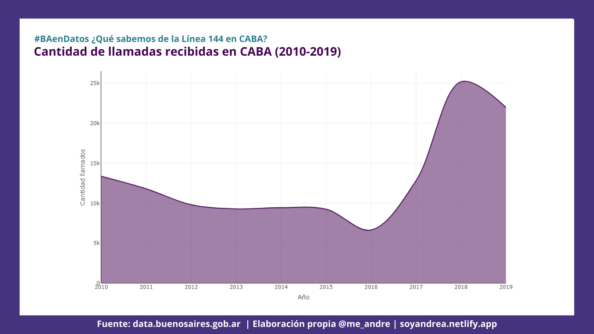
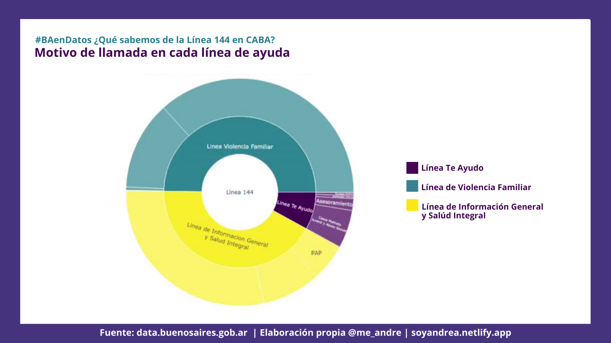

¿Qué pasó en esos años?

De la mano del #NiUnaMenos, la políticas públicas para la erradicación de la violencia hacia las mujeres fue ampliando el acceso a sus vías de comunicación.
Ya desde 2015 se impulsó una campaña para que los medios de comunicación informaran sobre la existencia de la línea 144, para 2016 se presenta el Plan Nacional de Acción para la Prevención, Asistencia y Erradicación de la Violencia contra las Mujeres 2017-2019 en el que se incluyeron campañas de difusión y concientización sobre la violencia de género.
Entre 2017 y 2018 el Ministerio de Desarrollo Social lanzó diversas campañas para el día de los enamorados para alertar sobre noviazgos violentos como “noviazgos sin violencia” y “¿Te Ama?”. Desde el GCBA lanzaron el test online para detectar noviazgos violentos. Entre tanto la línea 144 para 2017 fue habilitada por las empresas de telefonía celular como línea gratuita y para 2018 fue lanzada la aplicación móvil gratuita de la misma línea para IOS y android. Esto implicó que para comunicarse con la línea 144 ya no fuera necesario contar con saldo o datos móviles.
Así mismo, no hay que dejar de lado los hechos sociales que acompañaron a la sociedad Argentina en 2018 que tuvieron gran repercusión a nivel nacional e internacional en los que se encuentran el debate por la interrupción voluntaria del embarazo y la denuncia de Thelma Fardin.
2018 ha sido el año con mayor cantidad de llamados a la línea llegando a un total de 25.197. Dentro de las estadísticas está contemplado que los hechos de público conocimiento o movilizaciones referidas a la misma temática intensifican la comunicación con la línea.
Las comunicaciones al 144 se han distribuido en 3 líneas de ayuda de CABA que permiten orientar el tipo de consultas o asistencias a realiziar. Cabe destacar que la línea que más volumen de llamadas ha tenido es la Línea de Información General y Salud Integral, es clara la demanda por información.

Cada línea cuenta con un enfoque de atención: salud, vida familiar y adolescencia. En términos generales en cada ámbito se comunican para solicitar información y para buscar asesoría y contención en situaciones de violencia. Es importante recordar que la línea 144 no se trata de una línea de emergencia.

Para 2020 con el impacto del ASPO la atención de la línea 144 se extendió a whatsapp y mail.
Recuerda que podés comunicarte de manera gratuita las 24 hs., los 365 días, a través de un llamado al 144, por WhatsApp al 1127716463, por mail a linea144@mingeneros.gob.ar y descargando la app.
#BAenDatos ¿Qué sabemos de la Línea 144 en CABA?
— andrea (@me_andre) March 29, 2021
Me sumé al desafío de @BAGobAbierto & @BAinnovacion, y encontré información interesante sobre la línea 144 para compartir.
Mirá el análisis completo en https://t.co/9wEvCQHDlT#rladies pic.twitter.com/eAnJZFO8Ls